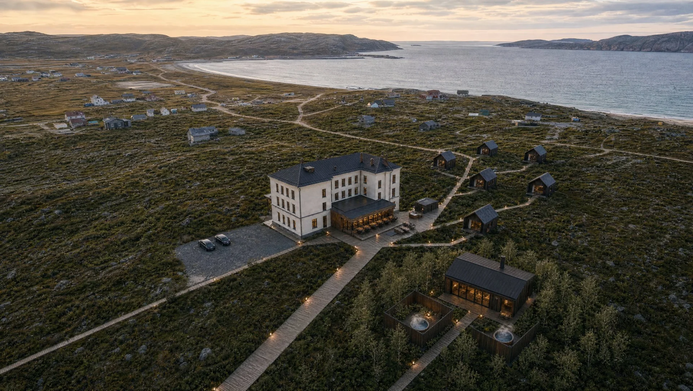
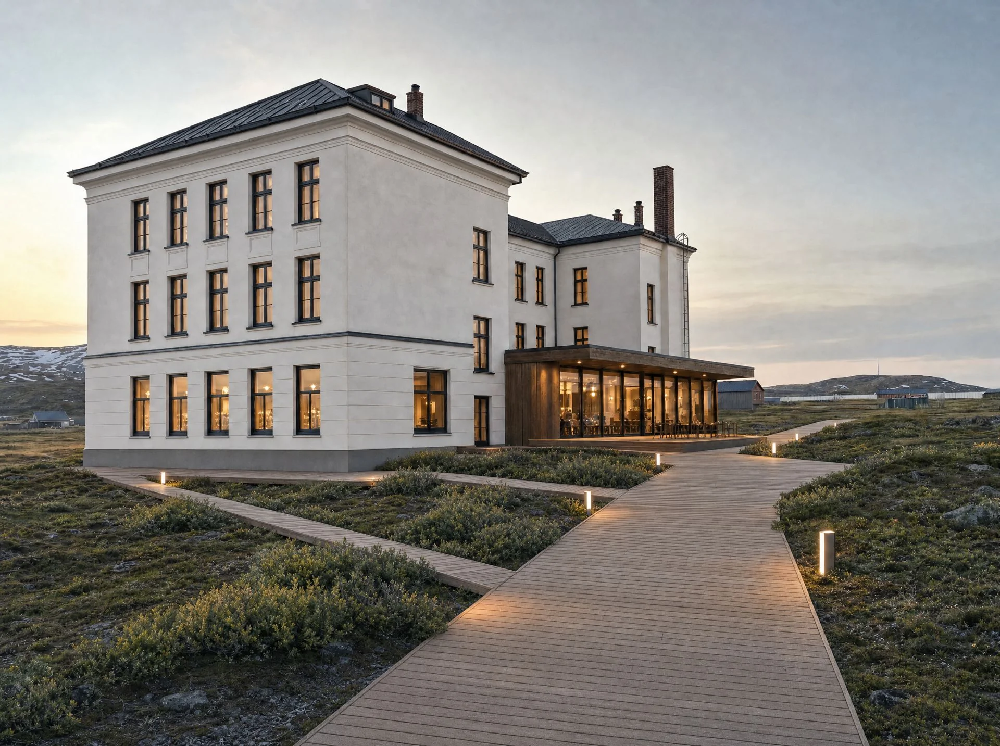
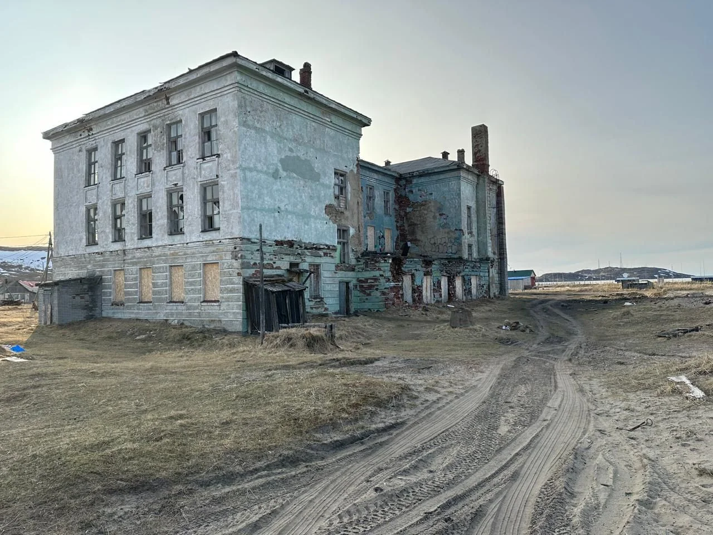
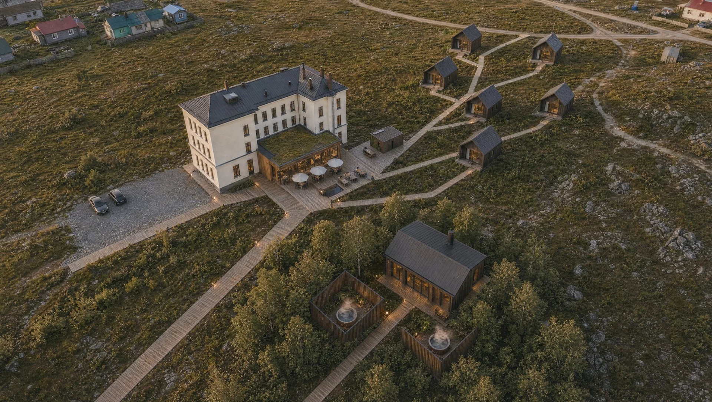
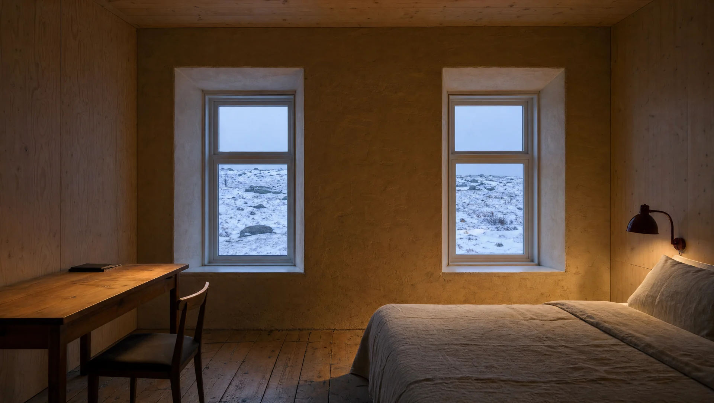
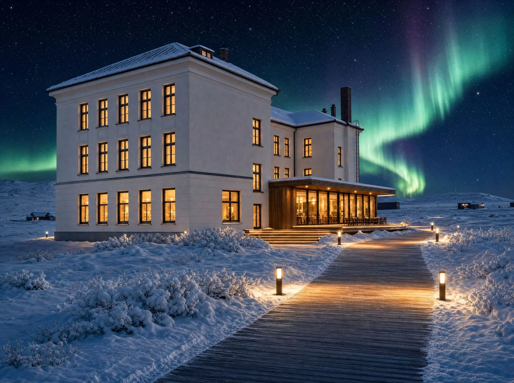

Здание и инженерия
ТУ от 25.09.2023 предусматривают 20 кВт. Это не подтверждение подключения и не мощность, достаточная для отеля. Нужны обследование конструкций, решения по воде и канализации, стоимость увеличения мощности.

Новая жизнь старой школы
Кирпичная школа 1959 года и земля под гостиницу на Кольском полуострове.
Покупатель приобретает здание и участок в собственность. Гостиницу предстоит спроектировать: проверить конструкции, спланировать номера и решить вопрос с сетями.


ФотоКонцептПредмет сделки
Кирпич, три этажа, включая один подземный. ВРИ участка: «Гостиницы, мотели».
Здание: 51:07:0030104:115
Земля: 51:07:0030104:1280
В существующем здании можно разместить номера. Ресторан, настилы и общее пространство свяжут его с остальным участком. На виде сверху отмечены пять зон концепта.

Т / 01 Концепт-визуализацияКонцепт территории: гостиница в здании школы, ресторан с террасой, шесть домиков, баня с двумя приватными купелями и парковка. Размещение не согласовано. Доход и затраты на домики и баню не входят в базовую модель.

Глубокие оконные проёмы, деревянный пол, стол у окна. Это эскиз атмосферы номера, не фотография интерьера и не утверждённая отделка.
Посещаемость парка показывает интерес к месту. Она не говорит, сколько гостей ночует в селе. Для инвестора важны тариф и проданные ночи по каждому сезону.

человек посетили парк «Териберка»
посетителей за июнь, июль и август
К 15 сентября 2026 года дирекция сообщила о 110 тыс. посетителей с начала года, включая летний сезон.
Дирекция ООПТ: итог 2025 ↗ · лето 2026 ↗. Периоды разной длины; темп роста из них не рассчитываем.
Меньше номеров и выше тариф, больше мест для групп или сочетание двух форматов. Сравните, сколько нужно вложить и какой NOI может дать гостиница после выхода на плановую загрузку.
Операционная модель
Индивидуальные гости и группы: часть фонда можно отдавать туроператорам в зимние даты.
Суммы в млн ₽. *Инвестиции / стабилизированный NOI, без срока стройки, разгона и стоимости кредита.
Номерная выручка = номера × сумма по сезонам (дни × загрузка × тариф). В модели 151 день зимы, 92 дня лета и 122 дня межсезонья. Тарифы и загрузка проектные, не данные действующего отеля.
Для смешанного / бутика / группового сценария: питание составляет 30 / 35 / 25% номерной выручки, прочие услуги 6 / 8 / 4%. Операционные расходы: 60 / 62 / 58% совокупной выручки. Из остатка вычитается модельная оценка налога на имущество (2,2% × 80% CAPEX), не заключение о налоге к уплате.
Реконструкция: 105 / 120 / 90 тыс. ₽ за м²; оснащение: 1,2 / 1,5 / 0,9 млн ₽ на номер. Сети и проектирование: 50 млн ₽. Сверху 10% резерва. Это вводные концепта от 14.11.2026, не смета. Доходы и отдельные затраты на домики и баню, льготы и субсидии не включены. Бюджет отдельного ресторанного павильона нужно проверить отдельно: выручка от питания в модели уже есть.
В проверке тарифа загрузка, доли допвыручки и доля операционных расходов не меняются. Результат не является прогнозом движения денег или обещанием доходности.
| Формат | Номера | CAPEX | Вложения с покупкой | NOI / год | Лет* |
|---|---|---|---|---|---|
| Смешанный | 44 | 312,4 | 402,4 | 55,6 | 7,2 |
| Бутик | 36 | 342,2 | 432,2 | 55,8 | 7,8 |
| Групповой | 52 | 277,4 | 367,4 | 53,3 | 6,9 |
Суммы в млн ₽. *Простая окупаемость = (90 млн ₽ + CAPEX) / стабилизированный NOI; без времени стройки, разгона и стоимости денег.
В модели: 90-120 тыс. ₽/м² на реконструкцию, 50 млн ₽ на сети и проектирование, оснащение и 10% резерва. Питание включено в выручку. Бюджет отдельного павильона требует проверки. Домики, баня и субсидии исключены. Расчёт на допущениях, а не действующий денежный поток.
Первый шаг: посмотреть здание с техническим специалистом. Затем уточнить число номеров, стоимость сетей и бюджет реконструкции. Только после этого имеет смысл фиксировать экономику.
ТУ от 25.09.2023 предусматривают 20 кВт. Это не подтверждение подключения и не мощность, достаточная для отеля. Нужны обследование конструкций, решения по воде и канализации, стоимость увеличения мощности.
Участок в водоохранной зоне; на части земли отмечены охранная зона КВЛ и публичный сервитут. Уточнить положение ограничений, статус объекта :1077 и допустимую застройку по ГПЗУ. ВРИ сам по себе не разрешает показанную планировку.
Обсуждаются покупка школы с участком, покупка с отложенной частью цены или совместное предприятие: собственник вносит недвижимость, инвестор финансирует реконструкцию. Сроки, доли и условия платежей согласуются отдельно.
Фотография школы: материалы объекта. Архитектурные визуализации и интерьер: Higgsfield, иллюстрации к концепции. Не проектная документация.